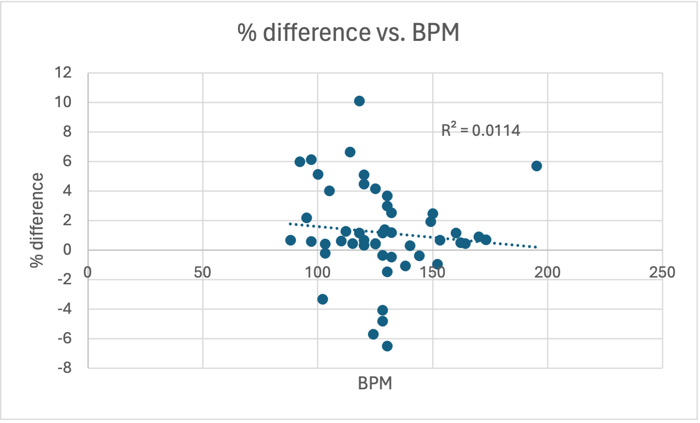

Does the music you listen to affect your running pace?
Introduction
Sometimes, when you run, you might be inclined to put on music from your favorite artists or with a higher beats per minute (BPM) to motivate you to run faster or more efficiently, but does it really help?
Gathering Data
My running data was gathered from Strava and my music data was gathered from Spotify.
I used each application’s respective data takeout service to gather my lifelong data
on each platform. The running data was in the form of .fit files, which is standard
for Garmin devices, which was the brand of the watch I used to record my runs, and
the music data was nicely packaged into .json files.
Cleaning Up Data
The only data I needed were songs that were being listened to during a running activity. Since
I also use Spotify outside of running, there are many songs that are not important. Using Python,
I iterated through the songs in the .json files until its time stamp landed in a running
activity. Since songs are shorter than running activities, I chose to iterate through each song
to wait until it hit a running activity, then loop and record each song’s data until it reached
the end of the running activity and repeat. I placed the data I thought would be useful into a
csv text file. Below is the driver function to convert the data into a csv file.
def compute():
musicmanager = MusicManager()
activitymanager = ActivityManager("activities_txt_form")
num_activities = 853
for i in range(num_activities):
activity_start_time = activitymanager.getStartTime()
activity_end_time = activitymanager.getEndTime()
activity_avg_pace = activitymanager.getAveragePaceFromSpeedField()
activity_sport = activitymanager.getSportType()
if(activity_sport == "Run"):
song_start_time = musicmanager.getCurrentStartTime()
song_end_time = musicmanager.getCurrentEndTime()
while(song_end_time < activity_start_time):
if(musicmanager.nextSong()):
song_start_time = musicmanager.getCurrentStartTime()
song_end_time = musicmanager.getCurrentEndTime()
else:
break
while(song_start_time < activity_end_time):
avg_pace_during_song = activitymanager.getAveragePaceBetweenTimes(song_start_time, song_end_time)
distance_during_song = activitymanager.getDistanceBetweenTimes(song_start_time, song_end_time)
# make sure duration_played is more than 30 seconds (30000)
duration_played = musicmanager.getDurationPlayed()
threshold_ms = 30000
if(avg_pace_during_song != -1 and musicmanager.getTrackName() != None
and musicmanager.getArtistName() != None and duration_played > threshold_ms):
data_str = (musicmanager.getTrackName() + "|" +
musicmanager.getArtistName() + "|" +
str(avg_pace_during_song) + "|" +
str(activity_avg_pace) + "|" +
str(distance_during_song) + "|" +
str(musicmanager.getMsPlayed()) + "|" +
activitymanager.getCurrentFileName())
with open("output.txt", "a") as file:
file.write(data_str + '\n')
if(musicmanager.nextSong()):
song_start_time = musicmanager.getCurrentStartTime()
song_end_time = musicmanager.getCurrentEndTime()
else:
break
activitymanager.nextFile()
Analyzing Data
In total, there were 4268 data points, meaning I listened to a total of 4268 songs while running. Each field had 7 attributes: the song’s name, the artist’s name, the average pace (m/s) while listening to the song, the average pace (m/s) of the whole run that it took place in, the distance traveled (m), the duration of the song played (ms), and the activity’s file name. Some fields were for the sake of making sure my data was accurate. Some ways I made sure that all the data was relevant would be that I would ensure that the track was playing for a minimum of 30 seconds and I would go and check each activity’s respective post on Strava to see if the paces were relatively lined up.
On Excel, I put some formulas to work. Using the average pace (m/s) while listening to the song (songAverage) and the average pace (m/s) of the whole run that it took place in (wholeAverage), I took the percent difference to see how much faster I was running during each song.
From there, I averaged the perecent difference based on the artist’s name. From there, I found the Z-score of each artist to see if there was a statistically significant difference. Using an alpha level of 0.05, the critical Z-value would be ±1.96, so anything beyond that would be statistically significant.
Correlation with Artist
Looking at the data with listening to artists that have been played more than 20 times, here are the results:
| Artist Name | % Difference | Num. Songs | Z-score |
|---|---|---|---|
| BTS | -1.166346952 | 50 | 0.611699734 |
| IU | 0.925553442 | 219 | -1.666986366 |
| BLACKPINK | 0.50795153 | 638 | -1.841058427 |
| TWICE | 0.415595481 | 443 | -1.349059968 |
| JENNIE | 1.554615128 | 40 | -1.091188626 |
| EVERGLOW | 0.740626628 | 93 | -0.916524881 |
| NIKI | -1.07203941 | 28 | 0.410245929 |
| Jay Chou | 1.312628126 | 21 | -0.685070149 |
| AJR | -1.260588134 | 18 | 0.405084368 |
| ITZY | -0.091957757 | 96 | -0.154572406 |
| Hans Zimmer | 1.675291875 | 26 | -0.938324985 |
| Billy Joel | 1.550918709 | 16 | -0.688720666 |
| Olivia Rodrigo | 0.26623313 | 88 | -0.467880831 |
| JEON SOMI | 1.535741524 | 49 | -1.195146937 |
| ROSÉ | -0.410918776 | 107 | 0.150915629 |
| OH MY GIRL | -0.803277289 | 26 | 0.264856614 |
| Leslie Odom Jr. | 1.336558079 | 31 | -0.845034787 |
| LOONA | 0.886140843 | 53 | -0.792748376 |
| aespa | -0.234593729 | 105 | -0.022510827 |
| Red Velvet | -0.10579446 | 82 | -0.130929153 |
| Taylor Swift | 0.551957907 | 152 | -0.95027735 |
| TOMORROW X TOGETHER | -1.422667749 | 50 | 0.784248681 |
| LISA | -0.675523221 | 34 | 0.231956932 |
| JO YURI | 1.447134941 | 24 | -0.795103408 |
| YOASOBI | 0.429172361 | 152 | -0.806161248 |
| IVE | 0.593901805 | 113 | -0.86179432 |
| ENHYPEN | -0.576480285 | 25 | 0.151756283 |
| STAYC | -1.054822567 | 36 | 0.455340752 |
| (G)I-DLE | -1.940127475 | 45 | 1.074469238 |
| Lin-Manuel Miranda | 0.580685285 | 23 | -0.382767584 |
| LE SSERAFIM | 0.331244956 | 76 | -0.488767548 |
| SEVENTEEN | 0.024749359 | 21 | -0.123210174 |
| NewJeans | 1.035887993 | 61 | -0.961820583 |
| Joe Hisaishi | 0.623766007 | 42 | -0.543824258 |
Since none of the Z-scores are beyond the critical Z-value of ±1.96, there is no correlation between pace and artist.
Correlation with BPM
However, one could argue that artists have a combination of slow and fast songs, which will make the correlation appear diluted. As a result, I decided to investigate to see if the song's BPM would affect my pace. To put this to the test, I took every song and counted how many times I listened to each song, and if I listened to it 5 or more times, I kept it. Then, I plotted the average percent difference on the y axis and its BPM on the x axis. The scatterplot’s trendline had an R² value of 0.0114, meaning there is little to no correlation between the two axes.
Visually speaking, there is no trend, and that is backed up by the low R² value.
Conclusion
While there is no statistically significant trend with listening to a specific artist or listening to tracks with a certain BPM, listening to music does help with making runs go by faster by letting me take my mind off of running. Nonetheless, while music does not affect my running, the most important step is still just going outside and keeping my body healthy.